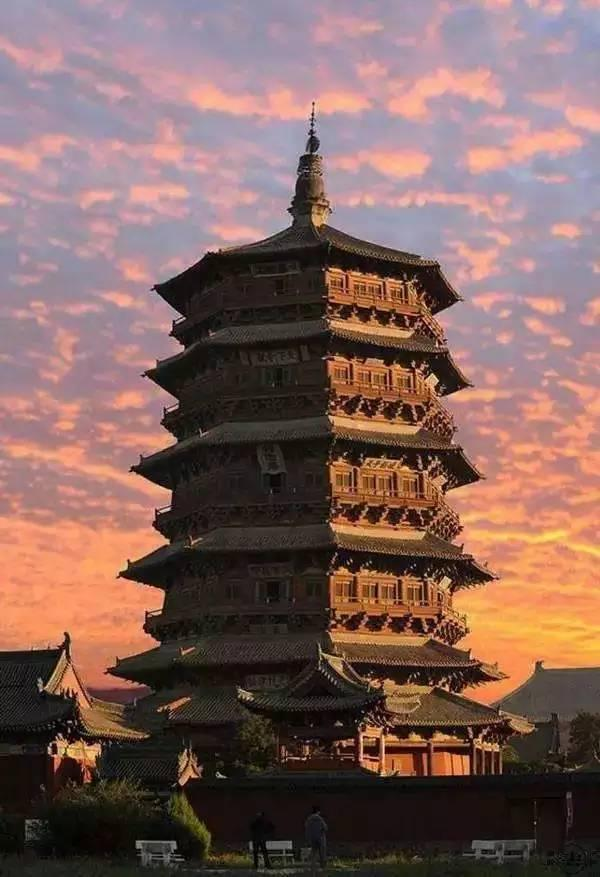
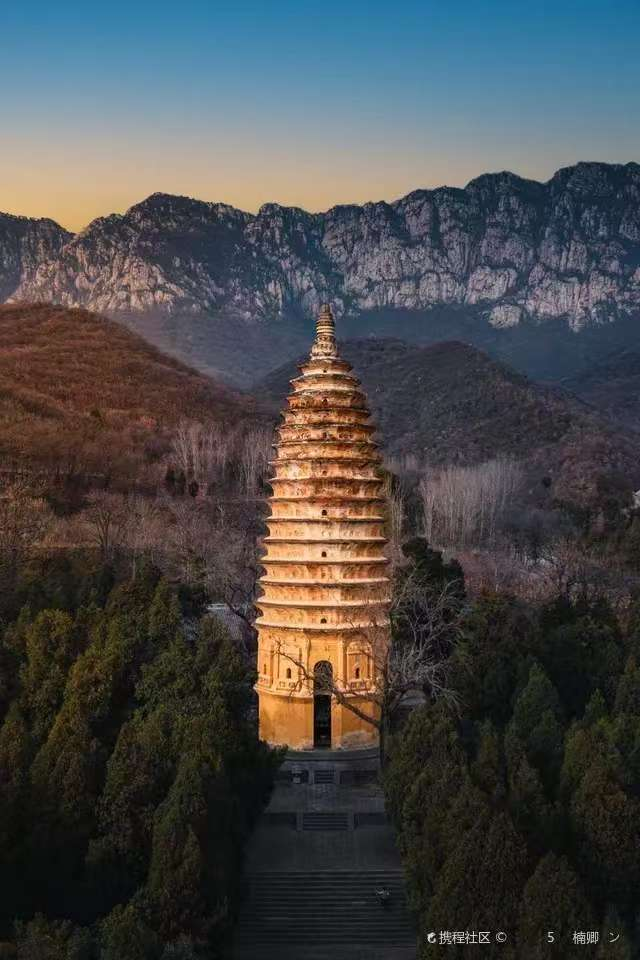
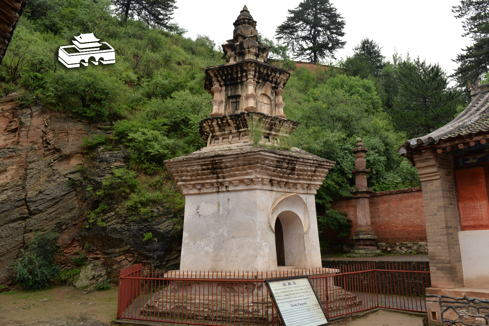

信仰的空间载体，中印建筑文化融合的艺术巅峰。以嵩岳寺塔为代表的佛塔、寺庙建筑，是中国古代建筑的重要分支，将佛教的宇宙观、哲学思想融入建筑营造，创造了兼具宗教意境与工程奇迹的建筑体系，是中印文化交流的历史见证，也是中国古代砖石建筑的巅峰之作。

世界现存最高最古老的木构塔，辽代始建，高67.31米，全塔无钉无铆，仅靠榫卯结构搭建，历经千年地震、战火仍屹立不倒，是世界木构建筑的奇迹。

中国现存最古老的砖塔，北魏正光四年始建，唯一的十二边形密檐式砖塔，历经1500年风雨地震仍完好无损，是中国古代砖构建筑的奇迹。

中国现存最完整的唐代木构建筑，唐大中十一年重建，由梁思成、林徽因发现，打破了"中国无唐代木构建筑"的断言，被誉为"中国第一国宝"。
楼阁式塔传入，以木构为主，仿中国传统楼阁形制，代表：洛阳白马寺塔
密檐式砖塔出现，砖石结构成熟，代表：嵩岳寺塔，中国现存最古老砖塔
楼阁式塔鼎盛，仿木构砖塔成熟，形制规整，气势雄浑，代表：西安大雁塔、小雁塔
花塔、覆钵式塔出现，木构塔达到巅峰，代表：应县木塔、定县开元寺塔
藏传佛教覆钵式塔、金刚宝座塔盛行，形制多样化，代表：北京妙应寺白塔、真觉寺金刚宝座塔
以嵩岳寺塔为代表，采用黄胶泥拌糯米浆为粘合剂，错缝砌筑，叠涩出檐技法，砖体烧制精度极高，墙体整体浇筑，结构整体性极强，历经1500年10余次大地震仍完好无损，代表了当时世界最高的砖构建筑水平。
以应县木塔为代表，全塔无钉无铆，仅靠50余种斗拱、上千个榫卯构件拼接而成，形成了柔性抗震结构，可化解地震的冲击力，同时斗拱层层挑出，实现了大跨度的出檐，兼具结构稳定性与建筑美感，是中国木构建筑的巅峰。
以佛光寺东大殿为代表，采用"材分制"模数化设计，斗拱雄大，出檐深远，柱网布局规整，"侧脚""生起"技法让建筑结构更稳定，整体风格雄浑大气，是唐代木构建筑的典范，完整保留了唐代建筑的营造技艺。
汉传佛教寺庙的标准布局规制，以山门、天王殿、大雄宝殿、法堂、藏经楼为南北中轴线，东西两侧配观音殿、地藏殿、祖师殿、伽蓝殿、斋堂、禅堂，形成"伽蓝七堂"的完整布局，将佛教的宇宙观与礼制秩序融入空间布局。
宗教建筑的核心装饰工艺，以敦煌莫高窟、佛光寺壁画为代表，采用矿物颜料绘制佛教故事、佛像壁画，色彩千年不褪；同时建筑梁枋、斗拱采用和玺彩画、旋子彩画，以龙凤、莲花、宝相花为纹样，烘托宗教的庄严氛围。
佛塔的顶部核心构件，由须弥座、相轮、宝盖、宝珠组成，象征佛教的须弥山宇宙观，以金属铸造，鎏金装饰，既是塔的封顶结构，也是塔的精神核心，同时起到避雷、稳定塔体的作用，是宗教寓意与工程技术的完美结合。